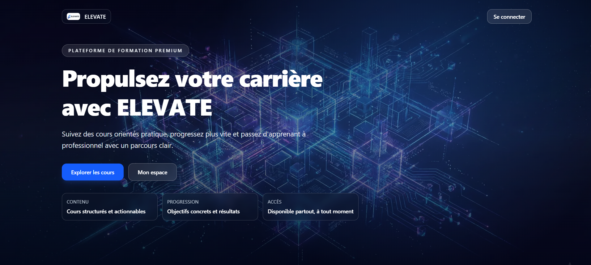
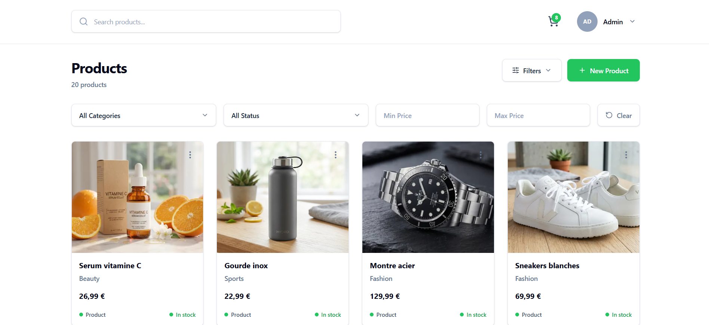
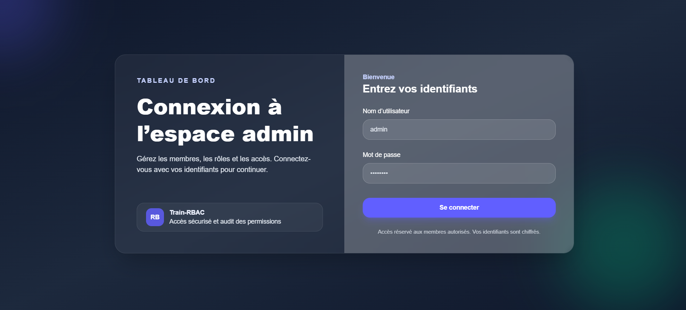

Elevate
Plateforme de formation orientée SaaS avec espace public, back-office, Better Auth, RBAC, Stripe, emails transactionnels, Cloudinary et Prisma/PostgreSQL.
Next.jsBetter AuthStripePrisma

NodeShop
Projet fullstack de consolidation backend avec frontend Next.js et API Node/Express/MongoDB : sessions, validation, sécurité HTTP, rate limiting, audit logs et CRUD produit.
Node.jsExpressMongoDBAudit logs

Train-RBAC
Projet ciblé sur un espace staff admin : rôles owner/admin/viewer, sessions Express, routes protégées, middleware permission et interface de gestion des membres.
RBACExpressMongoDBNext.js